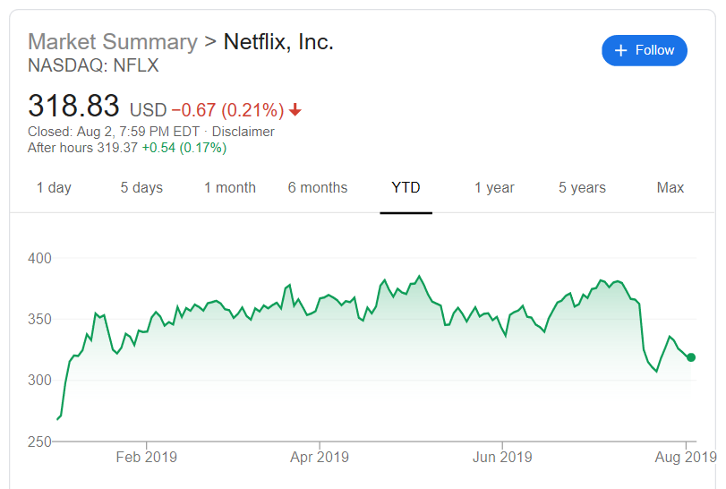
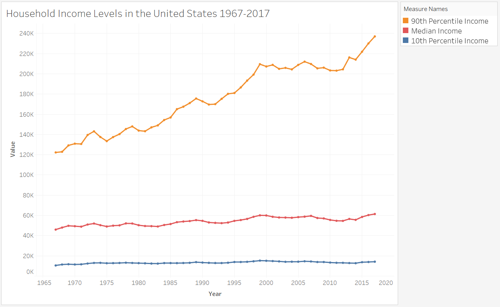

Line Charts#
What is a Line Chart?#
A line chart is a type of graph that shows how information is connected over a continuous interval. Most commonly, a line graph depicts changes over time. Data points are plotted on the graph and connected by a line in a dot-to-dot fashion. Lines can increase or decrease from one dot to the next. The resulting visualization is similar to a bar graph with the tops of the bars represented by points. A line is a better depiction of how a variable moves over time than bars, as the lines either increase or decrease when moving from dot to dot, which represents how the variable changes over time. See below for some examples of Line Charts:
Illustration 1: Stock Line Chart from Google Finance#

Illustration 1 presents a screenshot from Google Finance for the stock Netflix Inc from August 2, 2018 to August 2, 2019. On any finance website, stock trends are depicted using lines as they represent how the value has changed over a period of time. When the line goes up it represents the stock price increasing and when the line goes down it represents the stock price decreasing.5
Illustration 2: Multiple Line Chart#

Illustration 2 presents a line chart for household income in the United States for the years 1967-2017. This illustration displays multiple lines representing the 10th percentile, median, and 90th percentile for household income. If you compare the lines in Illustration 1 and Illustration 2, you can see that sometimes line charts show the dots for the data points as in Illustration 2 and sometimes the individual dots are not visible as in Illustration 1.6
When to Use a Line Chart#
Line charts are useful for visualizing changes over time and only appropriate when both the X and Y axes represent quantitative variables. Typically, the x-axis is a timescale. Using a line chart, you can determine if there are significant changes at a particular point in time or over a period of time. For example, looking at Illustration 1, the line chart shows a steep downward line around mid-July, which represents a significant decrease in Netflix’s stock price.
Line charts can also be used for comparisons. Specifically, you can use line charts to compare the over time values of data across categories. For example, if we again turn to Illustration 2, you can see that the 10th percentile income remains relatively stable over time, while the 90th percentile income is much more variable. Additionally, the line chart demonstrates how in the 1960s and 1970s the 10th percentile and the 90th percentile income were closer together; however, in more recent years the difference between the 10th and 90th percentile income has increased.
Line Charts in Bokeh#
The code for creating a line chart in Bokeh is nearly identical to that for a scatter plot. Instead of typing something like:
myfig.scatter(x_coords, y_coords)
You would instead type:
myfig.line(x_coords, y_coords)
The line method of figure “connects the dots”, but it doesn’t draw the dots. Instead, it draws a line from the coordinates of the first point to the coordinates of the second point. It then draws a line from the second to the third point. And so on.
Here’s a simple example:
from bokeh.plotting import figure, show
from bokeh.io import output_notebook
output_notebook()
x_coords = [0, 0.1, 0.2, 0.3, 0.4, 0.5, 0.6, 0.7, 0.8, 0.9, 1.0]
y_coords = [0, 0.01, 0.04, 0.09, 0.16, 0.25, 0.36, 0.49, 0.64, 0.81, 1.0]
f = figure(title='Sample Line Chart', height=300, width=300)
f.line(x_coords, y_coords)
show(f)
Notice that, in the figure above, there are no markers, just lines. What if you also want to show the markers? Then add one more line of code: f.scatter(x_coords, y_coords). That will tell Bokeh to draw the circles. See the code below:
x_coords = [0, 0.1, 0.2, 0.3, 0.4, 0.5, 0.6, 0.7, 0.8, 0.9, 1.0]
y_coords = [0, 0.01, 0.04, 0.09, 0.16, 0.25, 0.36, 0.49, 0.64, 0.81, 1.0]
f = figure(title='Sample Line Chart', height=300, width=300)
f.scatter(x_coords, y_coords, color='red')
f.line(x_coords, y_coords)
show(f)
Thus, in Bokeh, each command simply draws its output over the output from the previous commands. This makes it easy to draw more than one line, or more than one set of points.
So say I want to draw two lines. I could run the following code.
x_coords = [0, 0.1, 0.2, 0.3, 0.4, 0.5, 0.6, 0.7, 0.8, 0.9, 1.0]
y_coords = [0, 0.01, 0.04, 0.09, 0.16, 0.25, 0.36, 0.49, 0.64, 0.81, 1.0]
y_coords2 = [1.0, 0.81, 0.64, 0.49, 0.36, 0.25, 0.16, 0.09, 0.04, 0.01, 0.0]
f = figure(title='Sample Line Chart', height=300, width=300)
f.scatter(x_coords, y_coords, color='red')
f.line(x_coords, y_coords)
f.scatter(x_coords, y_coords2, color='black')
f.line(x_coords, y_coords2, line_color='black')
show(f)
Creating a Line Chart in Tableau#
Watch this video to learn about line charts in Tableau:
https://mediaspace.illinois.edu/media/t/1_88lbp7bl
References#
6 https://dqydj.com/united-states-household-income-brackets-percentiles/